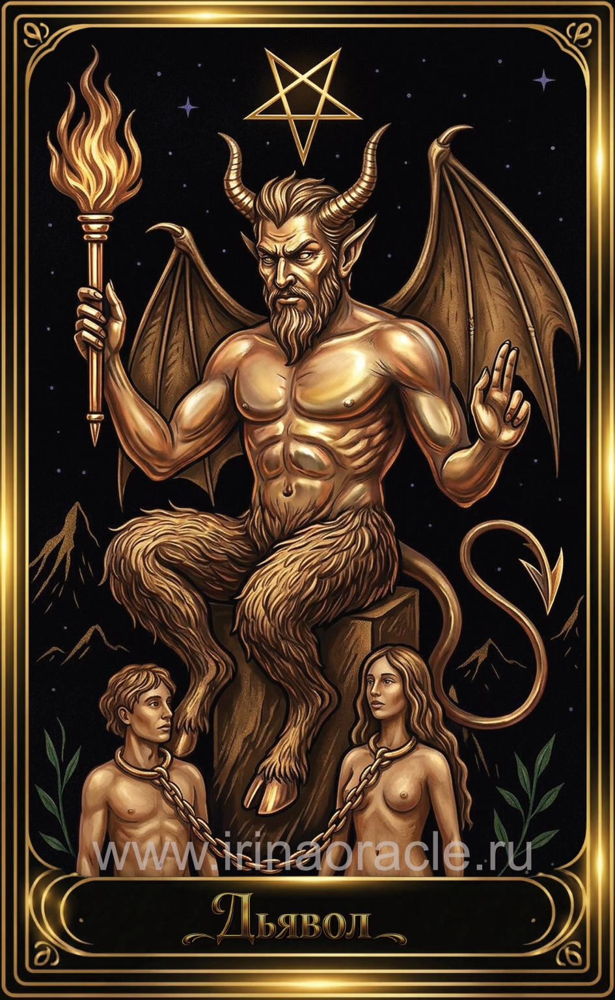

Дьявол — значение карты Таро
Дьявол — значение карты Таро

Дьявол — это карта искушений, теней, зависимостей и скрытых желаний. Она показывает, где человек связан страхами, привычками или иллюзиями, и где он отдаёт свою силу внешним обстоятельствам. Это не зло, а энергия, которая показывает, что именно требует осознания и освобождения.
Общее значение
Дьявол указывает на ограничивающие привязки: страхи, зависимости, материальные соблазны, токсичные связи или внутренние тени. Это карта, которая показывает, где человек чувствует себя связанным, хотя цепи часто можно снять самостоятельно.
Это время честного взгляда на свои желания, мотивы и слабости.
Любовь и отношения
В любви Дьявол указывает на сильное притяжение, страсть, кармические связи или отношения, основанные на зависимости. Это может быть как магнетизм, так и токсичность.
В тени — ревность, манипуляции, контроль, созависимость или страх одиночества.
Работа и финансы
В работе Дьявол указывает на амбиции, материальные стимулы, карьерный рост любой ценой или давление обстоятельств. Иногда — на работу, которая держит в «золотой клетке».
В финансах карта говорит о больших возможностях, но и о рисках: кредиты, азарт, чрезмерные траты или зависимость от дохода.
Здоровье
Дьявол указывает на зависимости, вредные привычки, стресс, психосоматические проявления или напряжение. Иногда — на необходимость пересмотреть образ жизни.
Карта напоминает: тело реагирует на то, что скрыто в психике.
Совет карты
Освободи себя. Посмотри честно на то, что тебя удерживает. Дьявол советует признать свои тени, перестать избегать правды и вернуть себе силу, которую ты отдавал страхам или привычкам.
Свобода начинается с осознания.
Теневая сторона
В тени Дьявол проявляется как зависимость, манипуляции, самообман, страх перемен или стремление контролировать других. Иногда — как бегство в удовольствия или материальные стимулы.
Карта напоминает: цепи держатся не на силе, а на страхе их снять.